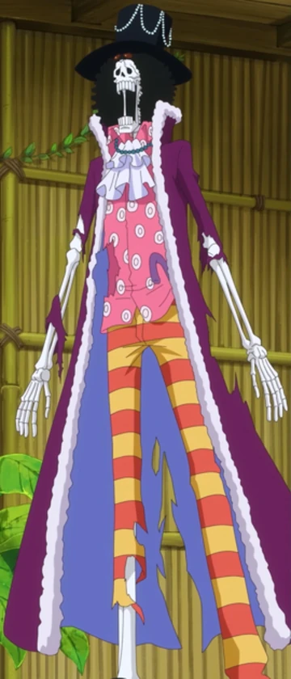
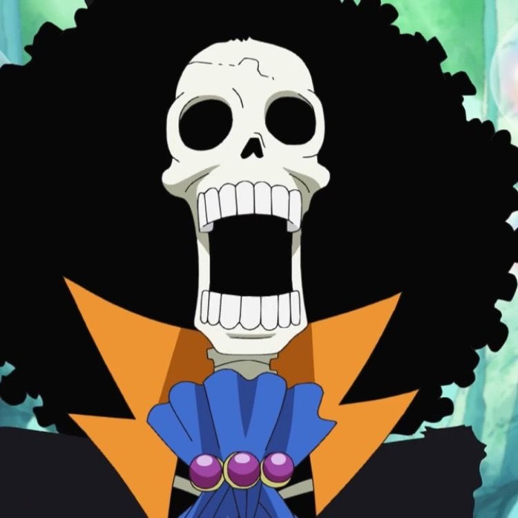

El músico de los Piratas de Sombrero de Paja. Es un esqueleto viviente devuelto a la vida por una Fruta del Diablo. Su sueño es reencontrarse con la ballena Laboon.
Hace más de 50 años, Brook pertenecía a los Piratas Rumbar, quienes dejaron a una cría de ballena (Laboon) en la entrada del Grand Line prometiendo volver por ella. Toda la tripulación de Brook murió en el Florian Triangle, pero su alma regresó un año tarde a su cuerpo (ya en los huesos) por los efectos de su Fruta del Diablo. Pasó 50 años en soledad en su barco fantasma hasta que conoció a Luffy, quien, fascinado, le ofreció unirse de inmediato. Se unió oficialmente tras la derrota de Gekko Moriah.

Es un esqueleto muy alto que conserva su enorme cabello estilo afro, ya que, según él, las raíces del pelo estaban tan profundas que el tiempo no lo pudrió. Suele vestir de manera estrafalaria, similar a una estrella de rock, portando siempre un bastón que esconde una espada.

Rol: Músico
Apodo: Soul King
Recompensa actual: 383.000.000 Berries
Lugar de origen: West Blue
Fruta del Diablo: Yomi Yomi no Mi